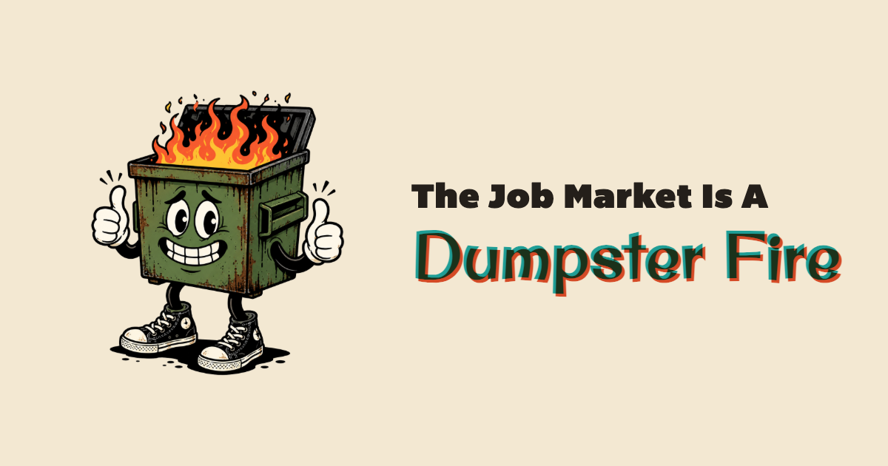

2026-07-15 revision: the wordmark now uses the hero-matchbook overprint exactly as the homepage renders it: tomato slip layered on top of the teal base with multiply blending, so the overlap darkens instead of reading as a flat outline. Layout, copy, and sizing are unchanged from the approved 2026-07-14 artwork. Render source: og-share-compose.html (1200×630).